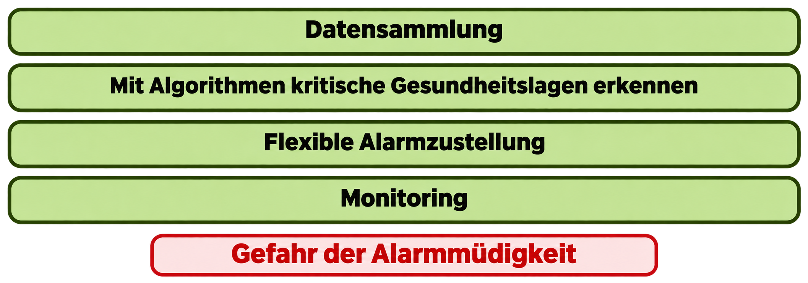

Sepsis
Erkennung aus kleinem Blutbild, Alter, Geschlecht
Rote Ampel im SAP
Pilotstudie mit Gastroenterologie und ZNA
50 erkannte Fälle in 19 Tagen

Prof. Dr. René Staritzbichler, Saleem Al Dakkak, Prof. Dr. Thorsten Kaiser, Dr. Clemens Ringel
Die Integration von digitalen Unterstützungssystemen in die Klinik zur frühzeitigen Unterstützung des Diagnoseprozesses
DAISY a) sammelt Daten, b) lässt Algorithmen laufen und c) informiert das medizinische Personal
DAISY ist ein unabhängiges Hardware-System, das in die Klinik-IT-Struktur eingebettet ist

Engl.: Clinical decision support systems - CDSS




Erkennung aus kleinem Blutbild, Alter, Geschlecht
Rote Ampel im SAP
Pilotstudie mit Gastroenterologie und ZNA
50 erkannte Fälle in 19 Tagen
Erkennung aus kleinem Blutbild
Erkennung aus Kreatinin-Verlauf
Auf Befund und gelbe Ampel im SAP
Durchschnittlich 33 erkannte Fälle pro Tag
Erkennung anhand des Kaliumwerts
Kalium < 2,5 mmol/L: neue Anforderung nach 6 Stunden
Berechnung aus PLT, GOT, GPT, Alter
Etablierter Score
Auf Anforderung: DSY-FIB4